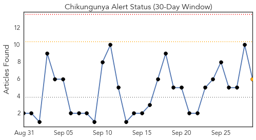
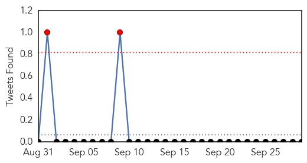
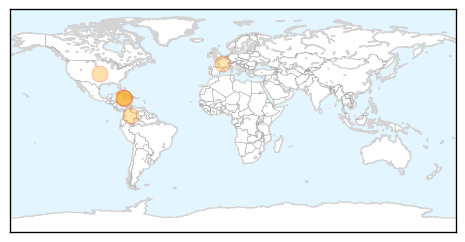
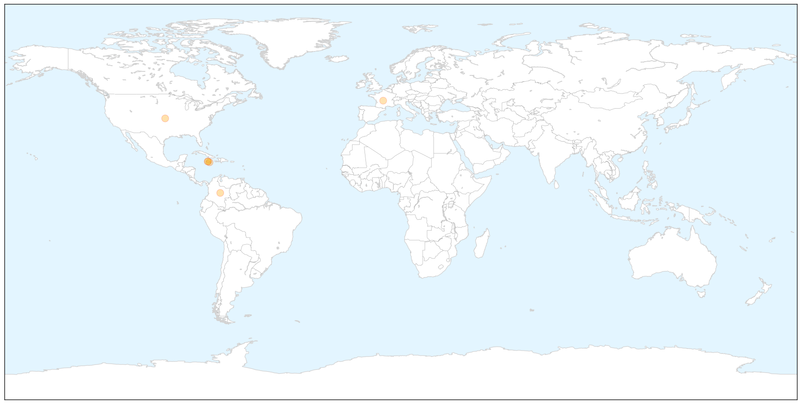
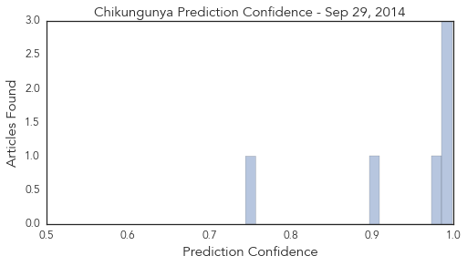
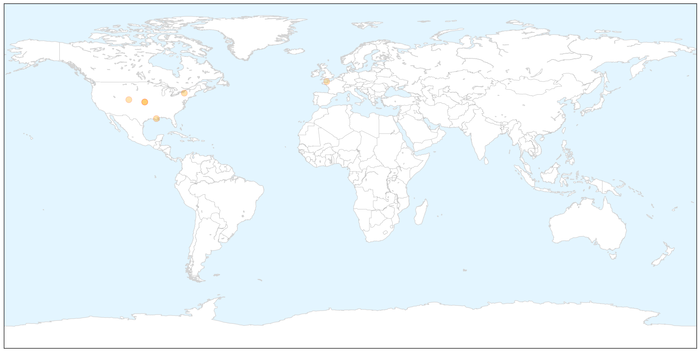

Chikungunya
30-Day Web Trend
0 alerts, 1 warnings

30-Day Twitter Trend
0 alerts, 0 warnings

Article Locations

X

Article Confidences
Top Articles:
- 0.998
- Virus Crossing Oceans: Chikungunya in the Americas
- 0.991
- Health minister asks country to help fight virus
- 0.988
- Are authorities underestimating chikungunya epidemic?
- 0.984
- Cost of Chik-V test a deterrent
- 0.901
- Health minister asks country to help fight virus
- 0.744
- Health minister says Chik-V cases will spike
Top Tweets:
-
No tweets found for Sep 29, 2014
West Nile Virus
30-Day Web Trend
0 alerts, 0 warnings

30-Day Twitter Trend
0 alerts, 0 warnings

Article Locations

X

Article Confidences

Top Articles:
- 0.997
- Paralyzed children are latest worry as virus sweeps across U.S.
- 0.997
- Paralyzed Children Latest Worry in U.S. Viral Outbreak
- 0.997
- Paralyzed children are latest worry as virus spreads in U.S.
- 0.995
- West Nile renews fight against mosquitoes
- 0.949
- CDC probing etiology of acute neurologic illness cluster
- 0.882
- Health Officials Investigating Paralysis in Kids With Enterovirus
Top Tweets:
-
No tweets found for Sep 29, 2014